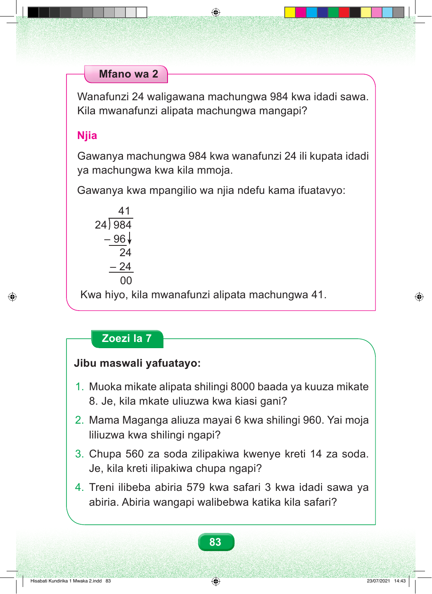

Mfano wa 2 Wanafunzi 24 waligawana machungwa 984 kwa idadi sawa. Kila mwanafunzi alipata machungwa mangapi? Njia Gawanya machungwa 984 kwa wanafunzi 24 ili kupata idadi ya machungwa kwa kila mmoja. Gawanya kwa mpangilio wa njia ndefu kama ifuatavyo: 41 24 984 – 96 24 – 24 00 Kwa hiyo, kila mwanafunzi alipata machungwa 41. Zoezi la 7 Jibu maswali yafuatayo: 1. Muoka mikate alipata shilingi 8000 baada ya kuuza mikate 8. Je, kila mkate uliuzwa kwa kiasi gani? 2. Mama Maganga aliuza mayai 6 kwa shilingi 960. Yai moja liliuzwa kwa shilingi ngapi? 3. Chupa 560 za soda zilipakiwa kwenye kreti 14 za soda. Je, kila kreti ilipakiwa chupa ngapi? 4. Treni ilibeba abiria 579 kwa safari 3 kwa idadi sawa ya abiria. Abiria wangapi walibebwa katika kila safari? 83 Hisabati Kundirika 1 Mwaka 2.indd 83 23/07/2021 14:43